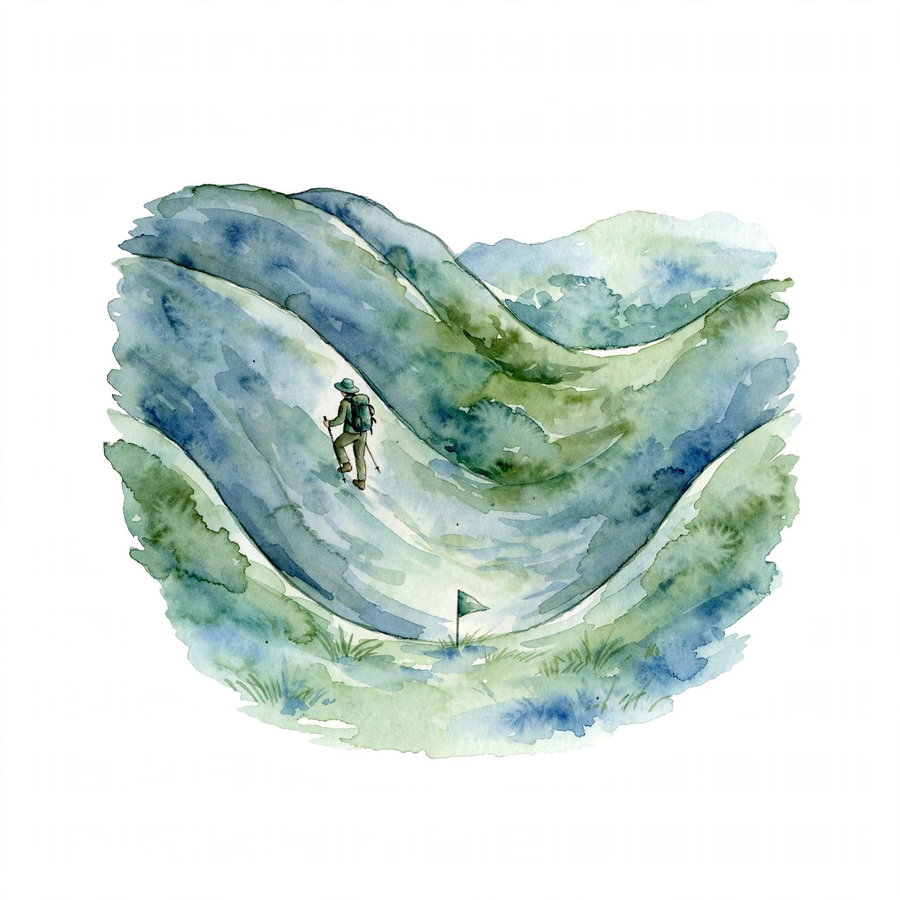

Companion · narrated from the lesson document
Linear regression and local weighting
Three ways to fit a line, one probabilistic story that justifies the squared error, and a weighted line that bends with the data. This companion walks the full arc of Unit 02: gradient descent, the normal equations, rank and conditioning, the Gaussian-noise likelihood, and locally weighted regression.
From the lesson The idea, and every number beside it, comes from the cited section of lesson-02-linear-regression-local-weighting.md. The phrasing is the companion's.
Illustration Invented by the companion: an analogy, a toy with made-up values, or a what-if. Never lecture content.
companion Companion voice: the idea above the tag is from the lesson. The generalization below it is the companion's.
Provenance: no lecture transcript exists for this unit, and no lecture video is named in the lesson. The lesson's Source mapping states that SRC-01 chapter 1 (PDF pages 10 to 20) was read in full on 2026-10-06. Leaf rows carry SOURCE ATTRIBUTION PENDING until the RUN 6 adversarial pass, so the strict fact-vs-interpretation tagging here is the guardrail. The Gauss portrait below is a real photograph of a painting, included for history, not as lecture content.


LMS: walk downhill, one step at a time
From the lessonSL-01 §Source anchor
You start with a random line through the data. How do you move it toward a better line, one small step at a time? Gradient descent looks at the slope of the cost under its feet and steps downhill. LMS is gradient descent on the squared error. Batch mode averages the slope over all examples before stepping. Stochastic mode steps on one example at a time.
From the lessonSL-01 §Objects, §Derivation
The cost: J(θ) = (1/2m) Σ (h_θ(x⁽ⁱ⁾) − y⁽ⁱ⁾)². The 1/2 cancels a factor of 2 in the derivative. For one example the chain rule gives dJ/dθⱼ = (h − y) xⱼ, and the descent step θⱼ := θⱼ − α (h − y) xⱼ, which equals θⱼ := θⱼ + α (y − h) xⱼ. That is the LMS update. The batch rule sums this over all m examples and divides by m. The stochastic rule applies it to one example, then moves to the next. The cost J is convex, so one global minimum exists.
| Mode | Work per step | Steps per pass | Behavior |
|---|---|---|---|
| Batch | O(mn) | 1 | Steady descent to the minimum |
| Stochastic | O(n) | m | Fast early progress, then oscillation near the minimum |
From the lessonSL-01 §Computed example
The lesson's hand computation. Toy data (1, 2), (2, 3), (3, 4). Start θ = [0, 0], so h(x) = 0. Learning rate α = 0.1. First stochastic step on (1, 2): h = 0, error = 2 − 0 = 2. With x₀ = 1, x₁ = 1: θ₀ := 0 + 0.1 × 2 × 1 = 0.2. θ₁ := 0 + 0.1 × 2 × 1 = 0.2. New line: h(x) = 0.2 + 0.2x. The error on (1, 2) drops from 2 to 1.6. The step size scales with the error and with the feature value, exactly as the notes point out (page 11).
The lesson's housing numbers from the notes (page 13): living area in square feet predicts price in thousands of dollars. Batch gradient descent gave θ₀ = 71.27 and θ₁ = 0.1345.
Illustration The descent machine. Batch gradient descent on the lesson's toy data, from θ = [0, 0]. Set α, step once or run 200 steps. The cost is J(θ) = (1/2m) Σ (h − y)². Watch α = 1.5 diverge.
α: 0.10
From the lessonSL-01 §Failure case, §Correctness checks
Three audit lines. The gradient has the same shape as θ. If not, the code is wrong. The cost must decrease on most steps. If it explodes, α is too large. At convergence the gradient norm is near zero. And the failure case with a number: α = 1.5 on the toy makes θ overshoot, the cost grows, the line swings wildly. Diagnosis: α above the stability limit 2/λ_max. Fix: shrink α or normalize features.
The normal equations: jump straight to the answer
From the lessonSL-02 §Source anchor, §Derivation
Gradient descent walks to the answer. Can we jump straight to it? Write J(θ) = (1/2)(Xθ − y)ᵀ(Xθ − y) and expand: J = (1/2)(θᵀXᵀXθ − 2yᵀXθ + yᵀy). Matrix derivatives (notes page 16): the gradient of θᵀAθ for symmetric A is 2Aθ, and the gradient of bᵀθ is b. With A = XᵀX and b = 2Xᵀy: grad J = XᵀXθ − Xᵀy. Set to zero: XᵀXθ = Xᵀy. If XᵀX is invertible, θ = (XᵀX)⁻¹Xᵀy.
From the lessonSL-02 §Mental model
The geometry behind the algebra. The best line makes the leftover errors orthogonal to every feature. The prediction vector Xθ is the shadow the target vector y casts onto the column space of X. That shadow is the closest point in the space, and the difference y − Xθ sticks straight out of it.
| Step | Computation (toy data) | Result |
|---|---|---|
| Gram matrix | XᵀX, X = [[1,1],[1,2],[1,3]] | [[3, 6], [6, 14]] |
| Right side | Xᵀy, y = [2, 3, 4] | [9, 20] |
| Determinant | 3×14 − 36 | 6 |
| Inverse | (1/6)[[14,−6],[−6,3]] | - |
| Solution | (1/6)[126−120, −54+60] | [1, 1] |
From the lessonSL-02 §Correctness checks, §Complexity
The strongest check of any least-squares code: Xᵀ(y − Xθ) must be near zero. For noisy data the residuals are nonzero but orthogonal to each column of X, and that orthogonality is exactly the normal equations. XᵀX is symmetric by construction. A nonsymmetric Gram matrix means a bug. Cost of the closed form: O(mn²) to form XᵀX, O(n³) to solve, O(n²) memory. It wins over gradient descent when n is small and m is large.

When the equations break: rank, conditioning, repair
From the lessonSL-03 §Source anchor, §Mental model
Two features are identical: square feet and square meters. What breaks, and how do we fit anyway? Rank deficiency means some dial does nothing new. Two columns point the same way, so infinite parameter settings give the same predictions. The notes' footnote on page 16: if fewer independent examples exist than features, or features are not independent, XᵀX is not invertible.
The Moore-Penrose pseudoinverse X⁺ gives the least-squares solution with minimum norm: of the infinite settings, it picks the smallest. Conditioning measures noise amplification. The condition number κ = λ_max / λ_min of XᵀX. A long thin valley in the cost means tiny data changes swing θ wildly. The lesson's toy: XᵀX = [[1, 0], [0, 1e−6]], κ = 1e6. A 1e−6 change in y can move θ₁ by 1. Diagnosis: features on wildly different scales.
| Rank | Stable solve | Why it helps |
|---|---|---|
| 1 | Standardize features, then normal equations | Often enough on scale mismatch |
| 2 | QR solve: θ = lstsq(X, y) | Never forms XᵀX, so it never squares the condition number |
| 3 | SVD / pseudoinverse: pinv(X) @ y | Handles rank deficiency and exposes singular values for diagnosis |
| 4 | Ridge (U09): adds λI | Guarantees invertibility |
From the lessonSL-03 §Computed example, §Failure case, §Correctness checks
Duplicate a feature column and XᵀX turns singular: numpy's pinv splits the duplicated weight evenly, the minimum-norm choice. Print the singular values of X before solving. A cliff to near-zero flags deficiency. After standardizing, κ should drop by orders of magnitude on scale-mismatched data. The hard failure: solving with the explicit inverse on a κ = 1e12 matrix. θ comes out as garbage with huge entries. The inverse formula is correct math and bad numerics. This is why the course never ships inv(XᵀX) @ Xᵀy in labs.
The Gaussian story: why squared error
From the lessonSL-04 §Source anchor, §Mental model
Why squared error? Why not absolute error, or something else? Squared error is not a law of nature. It is the consequence of one specific belief: the errors are Gaussian noise. If you believe that, maximum likelihood hands you least squares. If you believe Laplace noise, you get absolute error instead. The loss encodes a noise belief.
From the lessonSL-04 §Derivation
The model: y given x follows N(θᵀx, σ²). Likelihood: L(θ) = Π (1/√(2πσ²)) exp(−(y⁽ⁱ⁾ − θᵀx⁽ⁱ⁾)² / (2σ²)). Take logs: ℓ(θ) = m log(1/√(2πσ²)) − (1/(2σ²)) Σ (y⁽ⁱ⁾ − θᵀx⁽ⁱ⁾)². The first term does not involve θ. Maximizing ℓ over θ minimizes Σ (y⁽ⁱ⁾ − θᵀx⁽ⁱ⁾)², which is J up to the 1/2m factor. Least squares equals maximum likelihood under Gaussian noise. And σ² never enters the choice of θ (notes page 18).
| θ = [0, t₁], point (1, 2.2), σ = 0.5 | Prediction | Density | Log likelihood |
|---|---|---|---|
| t₁ = 2 (closer line) | 2.0 | 0.7365 | −0.3058 |
| t₁ = 1 (worse line) | 1.0 | 0.0448 | −3.1058 |
Illustration The belief dial. Slide t₁ for θ = [0, t₁] on the lesson's point (1, 2.2) with σ = 0.5. The toy recomputes density and log likelihood live. Watch the likelihood fall as the line leaves the point.
t₁:
Try t₁ = 1 to reproduce the lesson's worse line: log likelihood near −3.11.
From the lessonSL-04 §Correctness checks, §Failure case
Two checks. Log likelihood increases as predictions approach targets. Doubling σ scales all densities but keeps the argmax θ fixed: fit with σ = 1 and σ = 10 and θ must match. And the failure case with a number: one corrupted sensor reading of 1e9. Gaussian belief says this is nearly impossible, so the fit bends over backward to accommodate it. The squared loss is the wrong belief here. Fix: change the noise model or the loss.
Locally weighted regression: a line per neighborhood
From the lessonSL-05 §Source anchor, §Mental model
The data curves. A straight line underfits, a degree-5 polynomial overfits (notes page 19 figures). Can we fit a line that is only responsible for its neighborhood? For each query point x, solve a weighted least squares where nearby training points count more. The weights come from a kernel: a bump centered at x with width τ, the bandwidth. Small τ: only close neighbors matter, the fit wiggles. Large τ: all points count nearly equally, the fit is the global line.
From the lessonSL-05 §Objects
Weight: w⁽ⁱ⁾ = exp(−(x⁽ⁱ⁾ − x)² / (2τ²)), a scalar in (0, 1]. Weighted normal equations: θ = (XᵀWX)⁻¹XᵀWy with W = diag(w). The parameters θ are recomputed per query, so the model has no fixed dial count. It is nonparametric. Cost per query: O(mn² + n³).
| Query x = 2.0, training x: 1.0, 2.0, 3.0 | w at x = 1 | w at x = 2 | w at x = 3 |
|---|---|---|---|
| τ = 0.5 | 0.1353 | 1.0 | 0.1353 |
| τ = 10 | 0.9950 | 1.0 | 0.9950 |
lwlr_predict. The τ = 0.5 curve tracks local points. τ = 10 rides the global line. Recomputed for this page.Illustration The bandwidth dial. Move τ and watch the prediction at the query point move between the local fit and the global line. The weights table shows exactly who counts.
Query x: τ: 0.5
Data: the lesson's six points. Far from all data, the weight sum collapses and the prediction is garbage with high confidence. Check the weight sum first.
From the lessonSL-05 §Parametric vs nonparametric, §Failure case, §Correctness checks
Parametric linear regression: fixed dial count n, chosen before seeing data. After fitting, the data can be thrown away. θ is the whole model. Nonparametric LWLR: the dial count grows with the data. The training set must be kept at prediction time. Three checks: τ → infinity must reproduce the global least squares fit. τ → 0 must approach the local neighborhood. Weights at the query point equal 1 and decay with distance. The failure case: a query far from all data gives every weight near zero, XᵀWX near-singular, and a garbage prediction. Diagnosis: check the weight sum. Refuse to predict when it is tiny.
Overfit and underfit: the central trap
From the lessonSL-06 §Source anchor, §Mental model
Underfit: the hypothesis class cannot bend enough to catch the pattern. Both train and test error are high. Overfit: the class bends to the noise. Train error is low, test error is high. The notes' page 19 figures show the trio: a line that underfits, a quadratic that fits, a degree-5 polynomial that overfits. The degree-5 polynomial through six points has zero train error and wild swings between points.
From the lessonSL-06 §Nearest alternative, §Failure case
Model selection (U09) picks the degree by validation, not by train error. Regularization (U09) keeps the degree but shrinks the coefficients. The failure case is the trap itself: judging by train error alone always picks the most complex model.
The arc, end to end
From the lessonSL-01 to SL-06
The arc, end to end. Gradient descent walks to the answer one batch or one example at a time, and the update scales with error times feature (SL-01). The normal equations jump straight to the answer, and the geometry is a projection: residuals orthogonal to every feature (SL-02). When columns repeat or scales mismatch, the equations break, and the repair ladder runs from standardization through QR and SVD to ridge (SL-03).
Then the story beneath the algebra. Squared error is maximum likelihood under Gaussian noise. Change the noise belief and the loss changes with it (SL-04). When the data curves, weight each query's neighborhood and refit a local line: one knob τ, no fixed dial count, the dataset kept forever at prediction time (SL-05). And the trap that frames the next unit: train error alone always picks the most complex model, so model selection reads validation, never train (SL-06).
From the lesson§Research reading, §Nearest alternatives
Where the unit points next, in the lesson's own forward links. Newton's method (U03) converges in fewer steps but needs the Hessian. Kernel ridge regression (U05) is the same local idea in dual form. Ridge (U09) guarantees invertibility. Model selection and regularization (U09) pick the degree and shrink the coefficients. The extension: implement LWLR on the notes' housing-style curved toy and plot test error against τ. The falsifiable claim: test error is U-shaped in τ, minimized at an interior point, and the minimizer moves right as noise grows.
The playbook
Every lesson on this page, in order. Tap one to return to its chapter.